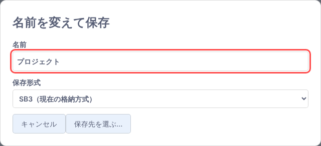
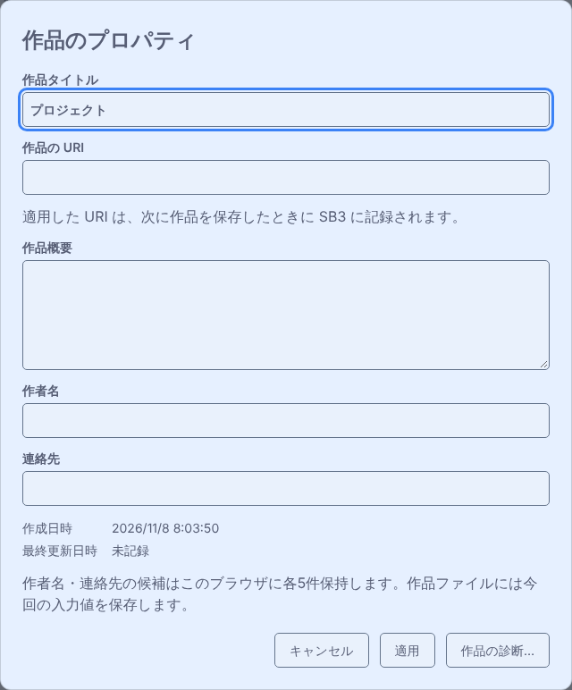
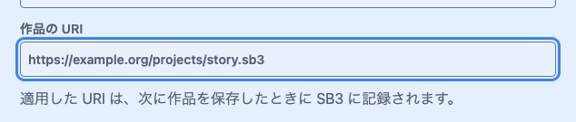
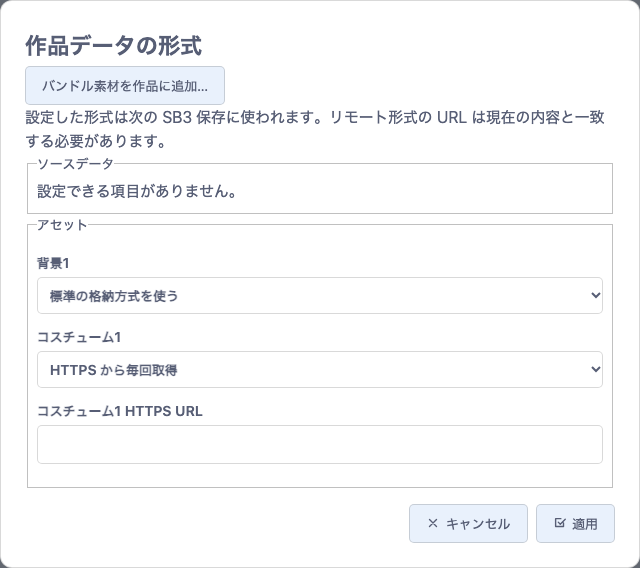
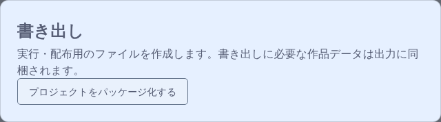

機能ガイド 11/12 · 2026年11月14日更新
保存して配布する
作品を保存し、作品情報を記録し、拡張コードや素材をどこに置くかを決めて、SB3や単一HTMLとして渡します。
11.1 上書き保存と名前を変えて保存を使い分ける
「ファイル」→「プロジェクトを保存」は、作品全体を、開いているSB3または作品フォルダに上書き保存します。新しい作品やダウンロードで保存した作品には上書き先がないため、この項目は選べません。フォルダ内のテキストファイルを個別に編集した場合は、そのタブの「ファイルを保存」を使います。
⌘S（WindowsはCtrl+S）の割り当ては、左端で開いているパネルによって変わります。「スプライト一覧」では「プロジェクトを保存」、「プロジェクトフォルダ」では「アクティブなタブを保存」に割り当てられ、ファイルメニューにもその項目の横にショートカットが表示されます。「プロジェクトフォルダ」で保存できるタブを選んでいないときは、ショートカットを押しても何も保存されません。
未保存の変更を示す *
作品を編集して未保存の変更があると、メニューバーの作品タイトルの右と、編集中のスプライトなどのタブ名の後ろに * が付きます。タイトル横の * を押すと、「プロジェクトを保存」「名前を変えて保存…」など、そのとき使える保存の操作が表示されます。保存すると * は消えます。
名前を変えて保存する
「ファイル」→「名前を変えて保存…」では、名前と保存形式を選んで保存します。

| 保存形式 | 保存される内容 |
|---|---|
| SB3（現在の格納方式） | 「組み込みデータ…」と「機能拡張…」で設定した格納方式のまま保存する |
| SB3（設定対象の台本・素材を同梱） | HTTPS参照などに設定した台本（紙芝居などのYAML）・素材をSB3の中に入れて保存する。手元で編集を続けるためのSB3を作るときに使う |
| プロジェクトフォルダ | 選んだフォルダに作品フォルダを作って保存し、そのフォルダを開く。フォルダを選べるChromeやEdgeなどで表示される。フォルダにあった内容は上書きされる |
- SB3の保存先を選んだ場合。選んだファイルが、以後の「プロジェクトを保存」の上書き先になります。保存先の選択をキャンセルすると、以前の上書き先のままです。
- SB3をダウンロードした場合。上書き先は設定されず、「プロジェクトを保存」は選べないままです。
- 作品フォルダを開いている場合。「プロジェクトを保存」で作品フォルダを更新します。ブロックだけでなく、変数、スプライトの位置や大きさ、スプライト・コスチューム・音の追加や削除も保存されます。「名前を変えて保存…」でSB3を作ると、作品フォルダとの接続は外れます。
11.2 復元ポイントから作品を戻す
保存に失敗したときや保存し忘れたときは、「ファイル」→「復元ポイント」を開きます。TurboWarpが一定の間隔でブラウザーに記録した復元ポイントから、作品を戻せます。記録の間隔は「1分ごと」から「30分ごと」までの5段階か、「なし」から選びます。
復元ポイントは最後の手段で、消えることもあります。作品は保存して残してください。
11.3 作品情報を記入してSB3に保存する
「ファイル」→「作品のプロパティ」で、作品のタイトルや概要、作者名を記録できます。
- 「作品タイトル」「作品概要」「作者名」「連絡先」を入力します。作品概要は複数行で書けます。
- 「適用」を押すと現在の作品に反映され、メニューバーの作品タイトルも変わります。「キャンセル」を押すと、入力中の変更を取り消して閉じます。
- 「ファイル」メニューから保存すると、作品ファイルに情報が記録されます。

作者名と連絡先を履歴から選ぶ
適用した作者名と連絡先は、それぞれ直近5件までブラウザーに記録されます。同じ値を使うと履歴の先頭に移り、選んだ候補は編集できます。SB3に入るのは今回適用した値です。ブラウザーの保存機能が使えない場合、候補の履歴はエディターを開いている間だけ利用できます。
連絡先に入力したメールアドレスや mailto: のアドレスはメールのリンクに、https: のアドレスはWebページのリンクになり、入力欄の下に表示されます。メールのリンクは使っている環境のメールアプリで、Webページのリンクは別のタブで開きます。作品概要はプレーンテキストで入力します。入力欄の下のプレビューでは、HTTPSのURLをリンクとして開けます。
日時とSB3への保存
作成日時と最終更新日時は自動で記録されます。新しい作品には作成日時が入り、日時の情報がない作品では「未記録」と表示されます。最終更新日時は、作品情報やブロックなどの変更を含む作品ファイルを保存できたときに更新されます。
履歴選択・新規入力
現在の作品へ反映
情報・更新日時を記録
タイトル・情報を復元
これらはPlus独自の作品情報としてSB3に保存されます。作者名と連絡先は、SB3を受け取った人にも見えます。標準のScratchやTurboWarp、作品情報を無効にしたエディターで保存し直すと、独自の情報が消えることがあるので、元のSB3を残しておいてください。保存仕様は作品情報と診断の仕様を参照してください。
11.4 作品のURIを指定してキャッシュを分ける
「ファイル」→「作品のプロパティ」の「作品の URI」に、作品を識別するHTTPSのアドレスを入力し、「適用」を押します。ユーザー名・パスワードや、# 以降のフラグメントを含むアドレスは使えません。適用したURIは、次に作品を保存したときにSB3に記録されます。

作品ごとにキャッシュを保存する拡張では、URIを変えると、以後の書き込みに新しいURIが使われます。URIを変えてもキャッシュは削除されず、以前のキャッシュはそのまま残ります。キャッシュはブラウザーの中に保存されます。
11.5 拡張コードの格納方式を選ぶ
拡張を追加するときは、「ファイル」→「機能拡張…」→「機能拡張の追加」を押し、「TurboWarp Plus」の一覧から拡張を選びます。拡張ごとの「読み込み元」で、コードを作品に入れるか、HTTPSの配信元から取得するか（拡張コードの格納方式）を指定します。「追加」を押してからSB3を保存すると、選んだ格納方式と、コードを照合するためのSHA-256、実行条件が記録されます。
| 追加画面で選ぶ読み込み元 | 「機能拡張…」での表示 | 保存するものと開くときの動作 |
|---|---|---|
キャッシュを残す（既定）remote-cacheable | HTTPSから取得・キャッシュ可 | HTTPS URLを記録します。開く人が許可すると、照合済みのコードをブラウザーに保存して再利用できます。 |
毎回取得するremote-non-cacheable | HTTPSから毎回取得 | HTTPS URLを記録します。開くたびに取得して照合し、ブラウザーには何も残しません。 |
作品の中からembedded-file | SB3内のファイル | コードをSB3内のファイルとして同梱します。 |
作品の中の data: アドレスからembedded-data | 作品JSON内のデータ | コードをdata URLとして作品データに同梱します。標準TurboWarpでもコードを読み込める形式です。 |
追加済みの拡張の格納方式を変える
「ファイル」→「機能拡張…」を開くと、作品で使っている拡張ごとに現在の格納方式が表示されます。配信元のURLが記録されている拡張では、格納方式を選び直せます。選び直したら「格納方式を適用」を押し、SB3を保存します。拡張を使っていない作品では「使用中の機能拡張はありません。」と表示されます。
キャッシュを残す・毎回取得する
SB3：URL＋ハッシュ
内容を照合
作品の中から（data: アドレスを含む）
SB3：コード＋ハッシュ
内容を照合
配信元から取得する格納方式では、URLが同じでも内容が変わると照合に失敗します。通信なしで開けるかどうかは、必要なコードやデータが手元にそろっているかで決まります。コードを同梱しても、拡張が外部のAPIや画像などを取得するなら通信が必要です。
キャッシュを作品ごとに分けるには、作品のURIを使います。細かな制約・互換性はSB3保存形式と機能拡張一覧の仕様を参照してください。
11.6 ソースデータと素材の格納方式を選ぶ
「ファイル」→「組み込みデータ…」を開くと、「作品データの形式」が表示されます。「アセット」欄で、背景・コスチューム・音などの素材ごとに格納方式を選びます。対応する拡張のYAMLなど、対象のソースデータが作品内にあれば「ソースデータ」欄にも並びます。HTTPSから取得する格納方式を選ぶと、その項目の「HTTPS URL」欄が現れるので、URLを入力します。URLから取得した内容は、現在のデータとバイト単位で一致している必要があります。

| 画面で選ぶ項目 | 使い分け |
|---|---|
| 標準の格納方式を使う | その項目への個別指定を解除し、標準の方式で保存する |
| HTTPS から取得・キャッシュ可 | 開く人が許可すると、照合済みのデータをブラウザーに保存して再利用できる |
| HTTPS から毎回取得 | 開くたびに配信元から取得する |
| SB3 内のファイル | データを作品内の別ファイルとして一緒に渡す |
| 作品 JSON 内のデータ | 作品のJSONにデータを直接格納する |
「適用」を押し、SB3を保存します。設定した格納方式は次の保存から使われます。HTTPS参照に設定した項目を、その時だけ同梱したSB3が必要なときは、名前を変えて保存で「SB3（設定対象の台本・素材を同梱）」を選びます。設定した格納方式のデータを読み戻すには、Plusの拡張ローダーが有効なエディターを使います。HTTPS参照がある作品を開くと、取得先の一覧が表示され、取得を許可するかどうかを選べます。拡張のプログラム自体の格納方式は、拡張コードの格納方式を選ぶで説明しています。
11.7 作品を書き出して単一HTMLで配布する
「ファイル」→「書き出し…」を開き、「プロジェクトをパッケージ化する」を押します。書き出しに必要な作品データは出力に同梱されます。通常のScratch 3やTurboWarpの作品なら、標準のTurboWarp Packagerが別のタブで開き、作品が読み込まれた状態になります。Plus形式の拡張を記録した作品では、同じ操作でPlus専用の出力画面が開きます。

- Plusの出力画面で、どのPlus拡張も外部のAPI・モデル・画像・音声などに依存していないことを確かめます。
- 確認欄にチェックを入れ、「確認してHTMLを生成」を押します。HTTPSで配信される拡張コードも、内容を照合したうえでHTMLに入ります。サンドボックスの指定もそのまま引き継がれます。
- 生成したHTMLをダウンロードして開きます。カタログの信頼条件を満たす拡張は、同梱したハッシュと照合してから実行されます。個別の承認が必要な拡張では、HTMLを開くたびに実行の許可を求められます。
必要な拡張を確認
外部に依存しない作品は、オフラインでも動きます。外部のAPI・画像・モデルなどを自動で集めて同梱する機能ではありません。Webフォントを使ったテキストは、Packagerの出力では、指定した代替フォントで表示されます。詳細はローダーとHTML出力の仕様を参照してください。